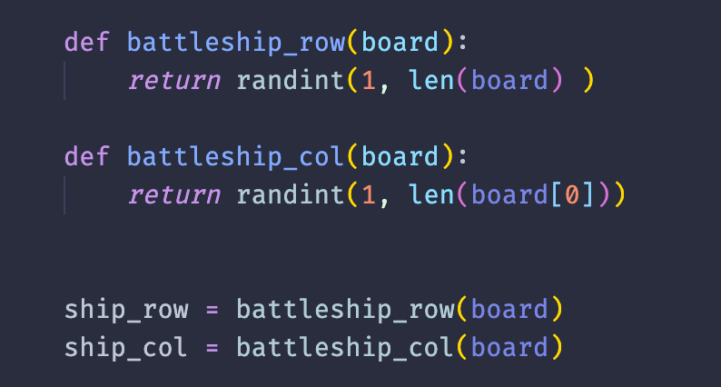

Intro -
Hey! This is The Coder School’s very own battleship tutorial! If you haven’t played battleship before, the way it works is each player takes a turn guessing a spot on the board that has the “enemy” battleship, and if you hit all of their ships first then you win. In this project, we are going to build a working version in python where we are going to have a certain number of guesses to find the enemy battleship. Let’s get started!
We are going to be using repl for this project, it is a web based IDE (Integrated Development Environment), which is essentially a program that allows us to write and run code. Go ahead and try out a couple print statements first to get familiar with writing and running in repl!
Importing Functions -
The first thing we are going to do is import some
functions that exist in python for us to use. By importing these functions,
we don’t have to create them ourselves and makes it so we don’t have to write
as much. The functions we are going to use include a sleep function from the
time library, a color function from term color, a random number function from
the random library, and the operating system functions.
The way we import a function from a library goes like this:
Here is what we need to include at the very top of our python file:
Making Our Variables -
In our game, we’re going to have to possible items in the board, either an empty space or a space that was guessed but it didn’t hit the battleship. For these, we are going to make two variables using the colortext function from the termcolor library. Here is how we can create them:

Go ahead and choose colors that for the two variables that you think look good! Termcolor has support for red, green, blue, orange, magenta, cyan, and white
Making Our Board -
Now that we have our variables, we need to set up the board we are going to use. We are going to make a list of positions that are each the variable of the O that is a color to represent an empty position, and with each row being a smaller list. Go ahead and set up the first row like this:
Now comes some customization in the game, how large should the board be? Keep in mind we will only get a certain number of guesses, so the larger the board the more difficult it will be to win. Here is how I will make it to be a medium difficulty:
Fun fact: the way we are treating these lists that are inside of a larger list is called a matrix! No, not like the movie. Still cool though imo.
How To Print Our Board -
Great, so we have our matrix that holds all of our board positions. The next step is making a function that can print the board our in a neat and clean way. What we need to do is go through each list, print each value in the list, then move on to the next one. Here is how we can do that:
To improve the user experience, let’s also add some information about where the columns and rows are so that we can easily look at what position we are choosing. Like so:
Generating a Battleship -
Now that we have our board, we need to create a battleship each time the game is run. This is where our import call to the randint function comes in really handy. What we need to do is make a random column and row for our hidden ship, and we can do that by using two variables that each call the randint function between the numbers of 0 and the size of your board! Here’s how it should look:
Setting Up Our Game -
The game is going to start coming together here, trust me! Now to set up the game, we are going to use a while loop, this is going to allow us to make multiple choices over time and regenerate our board after each “cycle” our code does. At first, we’ll have it ask us for our choice of row and column to guess where the enemy ship is. Set up your while loop like this for now:
Right now, our input isn’t really doing anything though. After we get the user input, we’ll have our board change at that position by assigning our other variable we made back at the beginning, the X! Here’s how we can do it:
Turns -
Whenever you run the program, you’ll quickly realize that it doesn’t ever stop. That’s because our loop will run as long as we don’t tell it to stop, and since we never tell it when to stop it will always run. Not good! A loop that always runs can be bad for programs as they won’t let us exit the code, and it could even cause your computer to overheat when a loop runs infinitely.
Here we will edit our while loop to only run a certain number of times. Now for me, I’m going to use 10 turns because I feel like that’s a good number of guesses, but you can make it as many or as few as you like depending on how difficult you want the game to be. Let’s set up our turn variable like this:
Now at the end of our loop, we are going to add a conditional statement to stop the loop when our turn variable is too big. Like so:
Checking Results -
Sweet, now you have a working turns mechanic! Our next step is to make the player’s input be checked to determine if they hit the ship, missed the ship, entered invalid input, or already chose that spot. The first step will be checking if the player hits the battleship, here’s what we will need to add:
Notice how the case goes inside of an if statement, that means that all our other possibilities will be in an else statement. Let’s begin by modifying where our code assigning a spot to an X is located so that it only occurs in the else statement, like so-
Now that we have that, we need to check if the player chooses something outside of our board! There are 2 cases, where they choose a row out of bounds or a column out of bounds. Their code will be similar, but pay close attention to which variable names you use! Here’s what we should add to our else statement:
Go ahead and test each of our conditions out!
Hint- to make it easier, have our game print out the location of our battleship
The last case we need to cover is where the player already guessed the location they are choosing. Our code needs to look at that position in our matrix, and if the position is an X instead of an O, we will tell the user they already guessed it!
Nice job, you just made a fully working battleship game! If you’ve gotten this far, then I challenge you to these challenges that are challenging. 🤯
---Challenges---
Create a Border for Your Grid -
Inside of your function for printing the board, how do you think we can add a border to make the game look more “official”? Where can we use print statements, and what could they be of? Maybe something like ———— or +++++++ or ******? Anything goes!
Using the Sleep Function -
Try to call our sleep function after each line is printed in our function that prints the board! Why do that? If we use sleep functions to make the board appear like it is “generated” it gives the program a much more active user experience and makes the computer seem more interactive.
Add a 2nd Battleship -
This is for the hardcore gamers. How do you think we could add a second battleship into the game? How would we cause the game to end only when both ships were hit instead of only one?
(Hint- its in the game loop!)